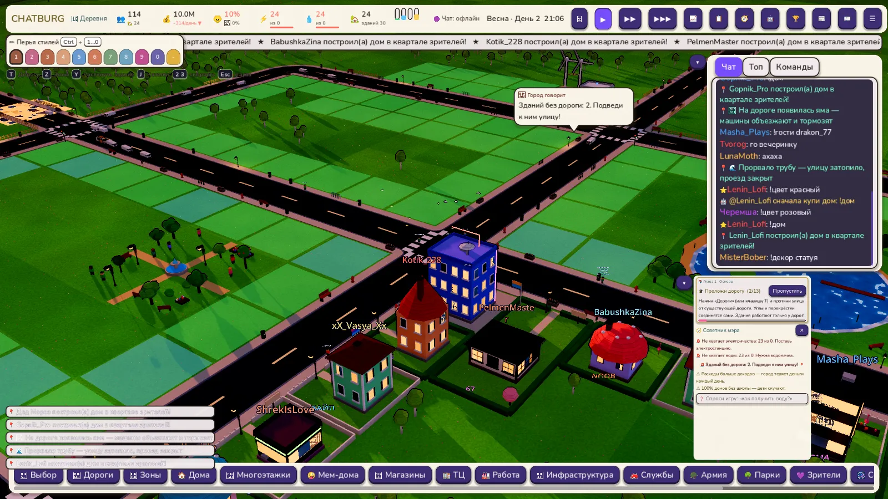
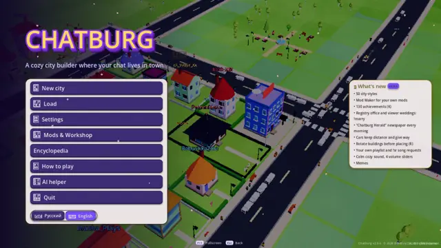

Уютный мемный градостроитель, где твой Twitch-чат строит город, а прораб матерится (запикано).
Бесплатно · Windows · Godot 4

Зрители пишут в чат — город меняется. Полный список есть в игре (Помощь / Энциклопедия).
Упрощённая веб-версия из того же проекта: маленькая карта, фейковый чат, лёгкая графика. Без установки — прямо тут.
🎮 Играть в браузере